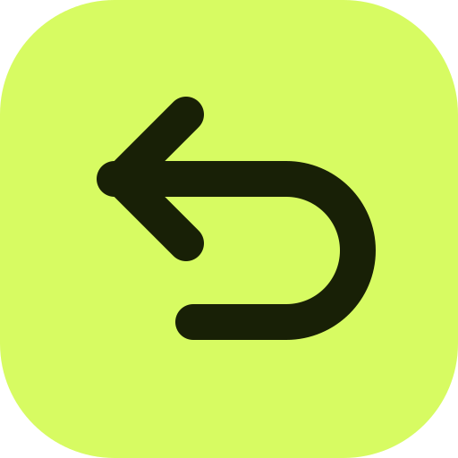

远程桌面
六套图标方向
面向 fnOS「远程桌面」应用：512 网格、统一圆角与描边，沿用产品现有的青柠绿
#D7FB62 与墨绿 #182006。六套方案分别强化「控制」「串流」「双向会话」「另一端」「品牌」与「经典语义」，
都可以直接替换图标文件。


统一规格
所有方案共享同一套网格、圆角与色板
画布
512×512 设计网格，导出 1024 主稿；图形按 2 的幂下采样到 512 / 256 / 128 / 64 / 32 / 16。
圆角
圆角半径 116（22.7%），接近 iOS / macOS squircle 比例；底座满版，系统加遮罩时也不会露边。
描边
主描边 24–30（画布的 5%–6%），是 16px 下仍可见的下限；不写文字、不用 20 以下的细线。
安全区
图形距边缘不小于 64，避免系统圆角裁切；小尺寸下保留 1–2 个主形状，删掉次要细节。
底板渐变 #18211A → #090D0A
青柠绿 #D7FB62 → #C8EF4C
墨绿 #182006
品牌绿 #1F6F4A → #145137
浅色系统底 #F4F5F2
建议与接入
先选方向，再替换文件；不要一次覆盖全部尺寸
推荐顺序
- 01 指针屏（主推）：语义、识别度与品牌色最平衡，和产品内的 Lucide 线性图标也能呼应。
- 06 外联（稳健）：如果希望零解释成本，选这个经典构图；建议同时补一版 16px 简化稿。
- 05 R 标（品牌）：适合作为长期品牌标志，或和 01 组合成「标志 + 功能图形」的两层体系。
- 02 / 03 / 04：分别适合强调串流、双向会话、控制另一端的场景，可作为运营图或启动页图形。

对照：当前web/public/favicon.svg 是青柠绿底 + 环形箭头，偏「刷新 / 重连」语义。以上方案保持同一品牌色，但补上「屏幕」这一层。
以主推「指针屏」为例
# 在仓库根目录执行；先确认已选中方案
cp web/design/app-icons/exports/01-pointer/fnos/icon_256.png \
packaging/remote-desktop/app/ui/images/icon_256.png
cp web/design/app-icons/exports/01-pointer/fnos/icon_64.png \
packaging/remote-desktop/app/ui/images/icon_64.png
cp web/design/app-icons/exports/01-pointer/fnos/ICON.PNG \
packaging/remote-desktop/ICON.PNG
cp web/design/app-icons/concepts/01-pointer.svg \
web/public/favicon.svg
ICON.PNG 是 64px 的包图标；替换后需要重新打 FPK，并在 fnOS 应用中心实测圆角裁切与显示尺寸。
网页 favicon 建议在 16 / 32 浏览器标签下复查；如果 16px 细节丢失，可以只保留「屏幕 + 光标」两个形状。
重新生成
SVG 是真源；PNG 和预览图都可重建
cd web
node design/app-icons/render.mjs # SVG → build/master/*.png（1024，透明底）
python3 design/app-icons/build_assets.py # 导出 7 档 PNG、fnOS 图标、接触表
依赖：Node + Playwright Chromium（渲染 SVG）、Python 3 + Pillow（缩放与拼版）。
全部源文件、导出图和预览见 web/design/app-icons/。